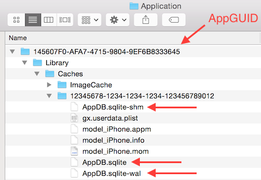
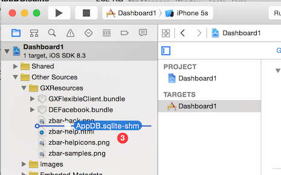
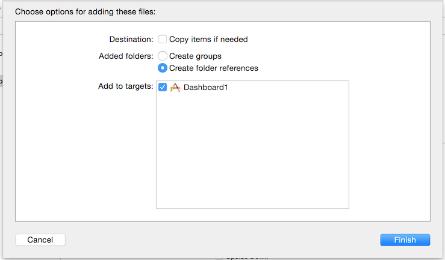

Distributing a Smart Device application with a pre-loaded data cache solves the scenario of applications with large volumes of data and infrequent updates. For example, an application of cooking recipes could have hundreds or thousands of recipes at the beginning, and later new recipes could be added on the Server. In this case, we want the application to be distributed with all the recipes available, checking them against the server if the tables involved in each query have been changed in order to update them if necessary. Fill cacheUsing the iOS emulator in a Mac, the application has to be manually run through to reach all the screens for which data is to be cached. Embed Cache DB files in the Xcode projectLocate the files AppDB.sqlite, AppDB.sqlite-wal and AppDB.sqlite-shm using the search finder or at /Users/<user>/Library/Developer/CoreSimulator/Devices/<DeviceID>/Data/Containers/Data/Application/<appGUID>/Library/Caches/12345678-1234-1234-1234-123456789012/..., where:
 For example: /Users/sebadrc/Library/Developer/CoreSimulator/Devices/0283D0A0-CF5E-45F7-ACDF-78E83AB2D971/data/Containers/Data/Application/EC11FFA9-09BC-477D-9348-E5DC78DAB20C/Library/Caches/12345678-1234-1234-1234-123456789012/AppDB.sqlite Upon finding the files, open the Xcode project of the application and drag them to the tree, as shown below:  …and select the check box as shown in the image below:  ImagesTo pre-load the cache with images there are some additional steps needed: a. On the folder as shown on the first image, there is a folder named ImageCache. In that folder there are all the images used on the applicaction that was navigated on the simulator. Compress all the images you want to include on the pre-load of the cache. Take into consideration that is not the same to compress the folder named ImageCache than compressing the files. The commpressed file should have the name ImageCache.zip for this process to work. b. Include, by drag & drop, this zip file on the Xcode to the project on the GXResources (same folder where the AppDB.sqlite file was added). Compile / PublishCompile, test, and file, etc. again, always from Xcode. If it is transferred again from GeneXus, the AppDB.sqlite file will have to be embedded again.
|